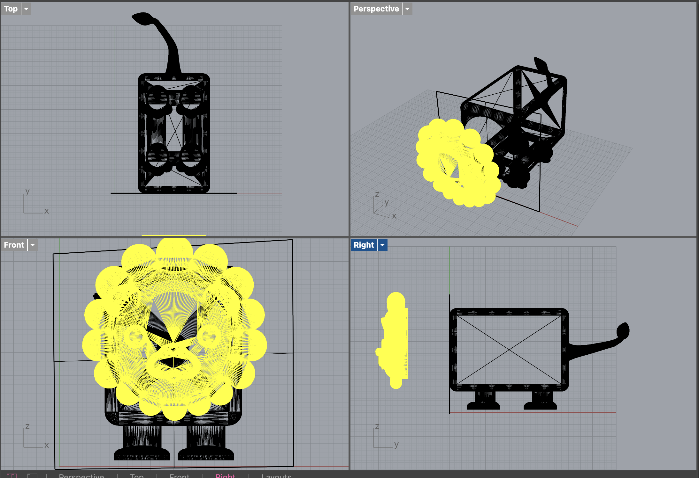
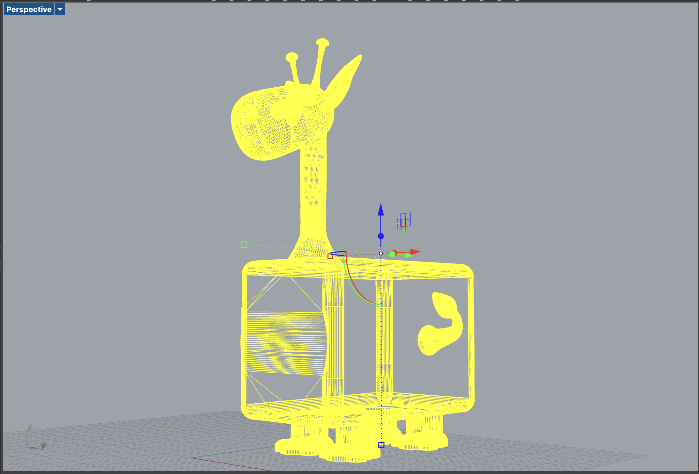
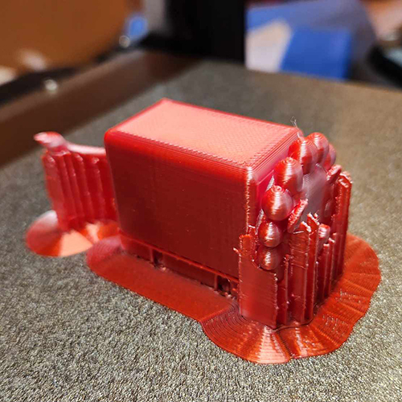
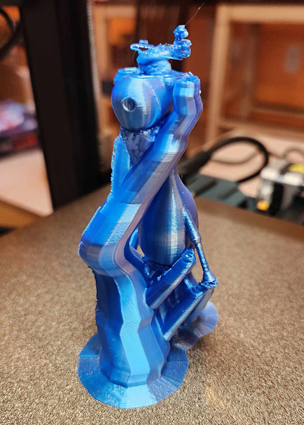

In thinking about this assignment I wanted to do something simple, but with a bit of interest. I decided
to start with my 2 kid’s favorite animals. A lion and a giraffe. I downloaded the files from
Thingiverse.
The lion
The Giraffe
Cute! So, next, I chopped off each of their heads… cause I’m brutal like that. This took me a bit more time than I had thought. It seemed straight forward, but nothing has been straight forward with these projects. I discovered I needed to create a surface and then use the [MeshBooleanSplit] to split the mesh. The newly created surface is like the “knife” in cutting the pieces apart.
Next, I combined the files together to create one masterpiece. The giraffe head was in several pieces. In Rhino, I went to Mesh > Boolean > Union to join the meshes together. I did this one piece at a time as when I did them all together, it created chaos that I never understood!
I got my new creature all together. It took some time to get the creature fully closed and in one selectable unit.

After this step, I decided to try printing it… just to play. I realized that there could be issues with the lack of supports, but wasn’t sure how to fix that, so I just went with it to see what I got. First off, the ears didn’t print correctly and left me with very thin sticks that looked nothing like the original mesh file. Secondly, I noticed there were definitely falls in the printing. The body was a bit of a mess, and the most noticeable issue was the giraffe’s jaw. He looked like a billy goat with some hairs hanging down and his jaw was droopy, but really considering I had no supports whatsoever, not too bad besides the ears.
I decided it would be fun to print out all 3 of my animals. The original 2 animals plus this new “lionaffe” hybrid. I found this YouTube video helpful in learning about supports and how they are created and used in Cura.
I did a test print of the lion using the “normal” supports method with the lines. The finished print ith the supports didn’t look pretty.
But after peeling off the supports, it looked great, however there are a few points of contact that need to be sanded down.
Next, I tried printing the giraffe, but with the “tree” method of supports. This looked interesting when it finished printing.
The original model was just too fragile in the limbs and easily broke off when taking off the supports. I decided to just leave it broken since it really was an experiment for learning about supports. I wasn’t going to reprint this goofy looking thing. Also the head looked a mess. The ears and horns were already ragile in the original file, and adding the supports just made it that much worse and more fragile when breaking off the supports. Oh well, this guy is a bit sad on top.
Warisha - Just for being a friendly face in class after a hard past week.